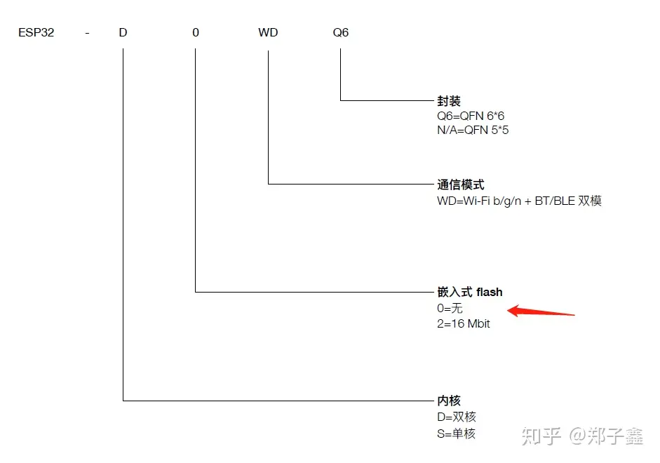

ESP32物联网开发
概述
esp32 是乐鑫即ESP8266后又一款标杆性的芯片，拥有低功耗，wifi&蓝牙双模，音频视频的应用等优点，在加上它良好的开源社区使得它在国内外物联网领域都十分流行。
废话不多说直接进入主题 ：
esp32开发使用官方提供的esp-idf开发框架
esp32外设开发GPIO
esp-idf对于各种外设提供了丰富的接口函数和例程，用户只需阅读例程和函数注释就完全可以使用esp32的各种外设。
gpio配置结构体，对于gpio初始化主要是是对这个接口进行配置。
/**
* @brief Configuration parameters of GPIO pad for gpio_config function
*/
typedef struct {
uint64_t pin_bit_mask; /*!< GPIO pin: set with bit mask, each bit maps to a GPIO */
gpio_mode_t mode; /*!< GPIO引脚输入输出模式 内容参考gpio_mode_t */
gpio_pullup_t pull_up_en; /*!< GPIO pull-up 是否使能上拉 */
gpio_pulldown_t pull_down_en; /*!< GPIO pull-down 是否使能下拉 */
gpio_int_type_t intr_type; /*!< GPIO interrupt type 中断类型 上升沿/下降沿等 */
} gpio_config_t;2. 将gpio_config_t 赋值后，使用 gpio_config(&io_conf);完成配置，执行完此函数后这个引脚就算配置完成了。
3. 之后只需要执行 gpio_set_level(gpio_num_t gpio_num, uint32_t level);函数就可以使起输出高低电平了。
4. 如果想使用中断的话，则需要在后gpio_config(&io_conf);后配置中断。
//定义回调函数
//注意IRAM_ATTR ，是将定义的中断回调函数定义在iram区
static void IRAM_ATTR isr_handler(void* arg)
{
....
}
//install gpio isr service
esp_err_t gpio_install_isr_service(int intr_alloc_flags)//注册中断号
//hook isr handler for specific gpio pin
//将中断回调函数与中断号关联起来，当中断发生时，会触发中断回调函数。
esp_err_t gpio_isr_handler_add(gpio_num_t gpio_num, gpio_isr_t isr_handler, void* args)5. 例程讲解：
/* GPIO Example
This example code is in the Public Domain (or CC0 licensed, at your option.)
Unless required by applicable law or agreed to in writing, this
software is distributed on an "AS IS" BASIS, WITHOUT WARRANTIES OR
CONDITIONS OF ANY KIND, either express or implied.
*/
#include <stdio.h>
#include <string.h>
#include <stdlib.h>
#include "freertos/FreeRTOS.h"
#include "freertos/task.h"
#include "freertos/queue.h"
#include "driver/gpio.h"
/**
* Brief:
* This test code shows how to configure gpio and how to use gpio interrupt.
*
* GPIO status:
* GPIO18: output
* GPIO19: output
* GPIO4: input, pulled up, interrupt from rising edge and falling edge
* GPIO5: input, pulled up, interrupt from rising edge.
*
* Test:
* Connect GPIO18 with GPIO4
* Connect GPIO19 with GPIO5
* Generate pulses on GPIO18/19, that triggers interrupt on GPIO4/5
*
*/
#define GPIO_OUTPUT_IO_0 18//要定义为输出的的io编号
#define GPIO_OUTPUT_IO_1 19//要定义为输出的的io编号
#define GPIO_OUTPUT_PIN_SEL ((1ULL<<GPIO_OUTPUT_IO_0) | (1ULL<<GPIO_OUTPUT_IO_1))//打开引脚标志 1为打开 0为关闭
#define GPIO_INPUT_IO_0 4 //要定义为输入的的io编号
#define GPIO_INPUT_IO_1 5 //要定义为输入的的io编号
#define GPIO_INPUT_PIN_SEL ((1ULL<<GPIO_INPUT_IO_0) | (1ULL<<GPIO_INPUT_IO_1))//打开引脚标志
#define ESP_INTR_FLAG_DEFAULT 0 //设置中断编号
static xQueueHandle gpio_evt_queue = NULL;//定义gpio消息队，用于传输消息
/*定义gpio 中断回调函数*/
static void IRAM_ATTR gpio_isr_handler(void* arg)
{
uint32_t gpio_num = (uint32_t) arg;
//在中断中向消息队列发送数据，
//注意freeRTOS中断操作都是用带有ISR的函数
xQueueSendFromISR(gpio_evt_queue, &gpio_num;, NULL);
}
static void gpio_task_example(void* arg)
{
uint32_t io_num;
for(;;) {
if(xQueueReceive(gpio_evt_queue, &io_num;, portMAX_DELAY)) {//接收队列消息，如果成功接收到数据 ，打印消息
printf("GPIO[%d] intr, val: %d\n", io_num, gpio_get_level(io_num));
}
}
}
void app_main(void)
{
gpio_config_t io_conf;
//disable interrupt
io_conf.intr_type = GPIO_PIN_INTR_DISABLE;//关闭中断
//set as output mode
io_conf.mode = GPIO_MODE_OUTPUT;//设置成输出引脚
//bit mask of the pins that you want to set,e.g.GPIO18/19
io_conf.pin_bit_mask = GPIO_OUTPUT_PIN_SEL;//打开gpio18/19
//disable pull-down mode
io_conf.pull_down_en = 0;//关闭下拉
//disable pull-up mode
io_conf.pull_up_en = 0;//关闭上拉
//configure GPIO with the given settings
gpio_config(&io_conf;);//执行配置
//interrupt of rising edge
io_conf.intr_type = GPIO_PIN_INTR_POSEDGE;//设置中断为上升沿触发
//bit mask of the pins, use GPIO4/5 here
io_conf.pin_bit_mask = GPIO_INPUT_PIN_SEL;
//set as input mode
io_conf.mode = GPIO_MODE_INPUT;
//enable pull-up mode
io_conf.pull_up_en = 1;
gpio_config(&io_conf;);
//change gpio intrrupt type for one pin
//改变中断触发方式为双边沿触发
gpio_set_intr_type(GPIO_INPUT_IO_0, GPIO_INTR_ANYEDGE);
//create a queue to handle gpio event from isr
//创建长度为10的队列
gpio_evt_queue = xQueueCreate(10, sizeof(uint32_t));
//start gpio task
//创建gpio测试任务函数
xTaskCreate(gpio_task_example, "gpio_task_example", 2048, NULL, 10, NULL);
//install gpio isr service
//注册中断
gpio_install_isr_service(ESP_INTR_FLAG_DEFAULT);
//hook isr handler for specific gpio pin
//添加中断回调函数
gpio_isr_handler_add(GPIO_INPUT_IO_0, gpio_isr_handler, (void*) GPIO_INPUT_IO_0);
//hook isr handler for specific gpio pin
//添加中断回调函数
gpio_isr_handler_add(GPIO_INPUT_IO_1, gpio_isr_handler, (void*) GPIO_INPUT_IO_1);
//remove isr handler for gpio number.
//移除中断
gpio_isr_handler_remove(GPIO_INPUT_IO_0);
//hook isr handler for specific gpio pin again
//重新添加中断
gpio_isr_handler_add(GPIO_INPUT_IO_0, gpio_isr_handler, (void*) GPIO_INPUT_IO_0);
int cnt = 0;
while(1) {
printf("cnt: %d\n", cnt++);
vTaskDelay(1000 / portTICK_RATE_MS);
gpio_set_level(GPIO_OUTPUT_IO_0, cnt % 2);//设置电平信号
gpio_set_level(GPIO_OUTPUT_IO_1, cnt % 2);//设置电平信号
}
}以上是esp-idf提供的官方例程，我只是添加了注释而已，其实想使用GPIO的读者只需阅读gpio.h 即可。
esp32外设开发I2C（驱动SSD1306）
对于学嵌入式的来说，i2c在熟悉不过了，两根线数据线（SDA）和时钟线（SCL)在加上一根地线就可以完成通信。
i2c 使用中涉及到的一些概念：起始位start、 从机地址slave_addr、 数据 data ，校验ACK NOACK、 停止位stop。具体硬件上怎么实现的我们暂且不管，我们只需记住这些概念就行了。
I2C通信规则
我现在简要说一下他的通信规则：i2c分成主机master 和从机slave 两种设备。每次都是主机发起通信请求的。
master 发送一个start 信号，在总线上所有的设备都可以接收到这个start信号。
紧接着master 发送slave的地址addr+w/r(w表示下一次发送的数据是主机向设备写数据，r表示下一次发送的是主机从从机中读取数据)，这时只有对应地址adrr的设备才能回复信号，这个slave回复一个ack，表示通信成功。
这回主机就可以发送数据了。
当通信完成后，从机返回一个noack，表示通信结束，主机发送一个stop信号，释放总线。
以上就是i2c最简单的通信过程。
esp32中I2C的使用
“工欲善其事，必先利其器”
对于i2c接口来说乐鑫为开发者提供了i2c调试工具i2c-tools,它的功能和linux上的i2c-tools一样，对于基于esp32来调试i2c设备很方便。 这个工具是以例程方式提供给我们的，我们暂时不用管他是怎么实现，只需要知道它的是使用方法即可。
cd ~/esp/esp-idf/examples/peripherals/i2ci2c文件夹中有两个工程：
i2c_self_test i2c_tools
进入i2c_tools
$make menuconfig //配置串口
$make -j4 // 编译 $make flash moitor// 调试成功运行之后我们看到会
==============================================================
|Steps to Use i2c-tools on ESP32|
||
|1. Try'help', check all supported commands|
|2. Try'i2cconfig'to configure your I2C bus|
|3. Try'i2cdetect'to scan devices on the bus|
|4. Try'i2cget'to get the content of specific register|
|5. Try'i2cset' to setthe value of specific register|
|6. Try'i2cdump' to dump all the register (Experiment)|
||
==============================================================
用过linux的朋友都很熟悉这几个命令，这个linux的i2c-tools 一样，这个i2c-tools默认使用gpio18 和gpio19.可以使用i2cconfig 修改i2c配置。 我在gpio18 和gpio19 上接了一个oled ssd1603,ssd1603默认地址是0x3c,执行i2cdetcet命令
esp32> i2cdetect
0 1 2 3 4 5 6 7 8 9a b c d e f
00: -- -- -- -- -- -- -- -- -- -- -- -- -- -- -- --
10: -- -- -- -- -- -- -- -- -- -- -- -- -- -- -- --
20: -- -- -- -- -- -- -- -- -- -- -- -- -- -- -- --
30: -- -- -- -- -- -- -- -- -- -- -- -- 3c -- -- --
40: -- -- -- -- -- -- -- -- -- -- -- -- -- -- -- --
50: -- -- -- -- -- -- -- -- -- -- -- -- -- -- -- --
60: -- -- -- -- -- -- -- -- -- -- -- -- -- -- -- --
70: -- -- -- -- -- -- -- -- -- -- -- -- -- -- -- --在i2c总线成功读到设备，如果想知道其他命令的用法可以执行help 命令查看。
i2c 的配置过程
首先配置i2c_config_t 结构体，这个结构体包含了i2c的一些参数，以下内容可以在i2c.h 中找到。
/**
* @brief I2C initialization parameters
*/
typedef struct{
i2c_mode_t mode; /*!< I2C mode */
gpio_num_t sda_io_num; /*!< GPIO number for I2C sda signal */
gpio_pullup_t sda_pullup_en; /*!< Internal GPIO pull mode for I2C sda signal*/
gpio_num_t scl_io_num; /*!< GPIO number for I2C scl signal */
gpio_pullup_t scl_pullup_en; /*!< Internal GPIO pull mode for I2C scl signal*/
union {
struct {
uint32_t clk_speed; /*!< I2C clock frequency for master mode, (no higher than 1MHz for now) */
} master;
struct {
uint8_t addr_10bit_en; /*!< I2C 10bit address mode enable for slave mode */
uint16_t slave_addr; /*!< I2C address for slave mode */
} slave;
};
}i2c_config_t;具体的配置如下：
#define SDA_PIN GPIO_NUM_18
#define SCL_PIN GPIO_NUM_19
i2c_config_t i2c_config = {
.mode = I2C_MODE_MASTER,//主机模式
.sda_io_num = SDA_PIN,//sda i引脚编号
.scl_io_num = SCL_PIN,//scl 引脚编号
.sda_pullup_en = GPIO_PULLUP_ENABLE,//上拉使能
.scl_pullup_en = GPIO_PULLUP_ENABLE,//上拉使能
.master.clk_speed = 1000000 // 100k
};
i2c_param_config(I2C_NUM_0, &i2c_config;);//配置参数初始化，此函数内部就是将i2c_config 中的相关参数 填入到i2c[i2c_num_0] 结构体中。
i2c_driver_install(I2C_NUM_0, I2C_MODE_MASTER, 0, 0, 0);//初始化配置以外的所有相关参数，将配置写入寄存器初始化完成之后，就开始使用esp-idf提供的函数进行i2c的读写操作了。
根据官方例程讲解esp-idf 读写流程 ，下面的函数是我从官方例成中提取出的发送函数。
/**
* @brief test code to operate on BH1750 sensor
*
* 1. set operation mode(e.g One time L-resolution mode)
* _________________________________________________________________
* | start | slave_addr + wr_bit + ack | write 1 byte + ack | stop |
* --------|---------------------------|---------------------|------|
* 2. wait more than 24 ms
* 3. read data
* ______________________________________________________________________________________
* | start | slave_addr + rd_bit + ack | read 1 byte + ack | read 1 byte + nack | stop |
* --------|---------------------------|--------------------|--------------------|------|
*/
static esp_err_t i2c_master_sensor_test(i2c_port_t i2c_num, uint8_t *data_h, uint8_t *data_l)
{
int ret;
i2c_cmd_handle_t cmd = i2c_cmd_link_create(); // 在执行i2c之前，必须执行此函数 创建一个i2c 命令 链接，为之后的i2c操作执行，在执行完成之后需要销毁
i2c_master_start(cmd);//i2c运行开始函数。注意这不是真的开始，只是是一个开始标记，初始化cmd
//以下是i2c真正的读写操作
i2c_master_write_byte(cmd, BH1750_SENSOR_ADDR << 1 | WRITE_BIT, 0x01);// 向BH1750_SENSOR_ADDR 写入操作，等待从机返回数据
i2c_master_write_byte(cmd, BH1750_CMD_START, 0x01); // 继续写入数据
i2c_master_stop(cmd);//i2c停止运行。并不是真正的停止，因为此时i2c还没有真正的运行，我认为这是一个标识，当时i2c运行的时候读取到此标志就停止运行。
ret = i2c_master_cmd_begin(i2c_num, cmd, 1000 / portTICK_RATE_MS); //按照cmd中的记录的操作顺序开始运行i2c （start-> write BH1750 地址 -> write BH1750_CMD -> stop）
i2c_cmd_link_delete(cmd); // 操作完成 删除cmd
if (ret != ESP_OK) {
return ret;
}
vTaskDelay(30 / portTICK_RATE_MS);//freeRTOS的系统延时函数
cmd = i2c_cmd_link_create(); //重新创建cmd 链接
i2c_master_start(cmd);
i2c_master_write_byte(cmd, BH1750_SENSOR_ADDR << 1 | READ_BIT, ACK_CHECK_EN);
i2c_master_read_byte(cmd, data_h, ACK_VAL);
i2c_master_read_byte(cmd, data_l, NACK_VAL);
i2c_master_stop(cmd);
ret = i2c_master_cmd_begin(i2c_num, cmd, 1000 / portTICK_RATE_MS);
i2c_cmd_link_delete(cmd);
return ret;
}esp32 i2c 驱动 ssd1603
关于ssd1306的工作原理就不做介绍了，只需要记住ssd1306的默认地址是0x3c。
跟据上面介绍的esp-idf i2c 的操作方式实现对ssd1306初始化 1. ssd1306 初始化函数
void ssd1306_init() {
esp_err_t esp_err;
i2c_cmd_handle_t cmd = i2c_cmd_link_create();//必须创建
i2c_master_start(cmd);
i2c_master_write_byte(cmd, (OLED_I2C_ADDRESS << 1) | I2C_MASTER_WRITE, true);
i2c_master_write_byte(cmd, 0x00, true);
i2c_master_write_byte(cmd, 0x8d, true);
i2c_master_write_byte(cmd, 0x14, true);
i2c_master_write_byte(cmd, 0xa1, true); // reverse left-right mapping
i2c_master_write_byte(cmd, 0xc8, true); // reverse up-bottom mapping
i2c_master_write_byte(cmd, 0xaf, true);
i2c_master_stop(cmd);
esp_err = i2c_master_cmd_begin(I2C_NUM_0, cmd, 10/portTICK_PERIOD_MS);
if (esp_err == ESP_OK) {
ESP_LOGI(tag, "configured successfully");
} else {
ESP_LOGE(tag, " configuration failed. code: 0x%.2X", espRc);
}
i2c_cmd_link_delete(cmd);
}ssd1306 清屏函数
void ssd1306_clear() {
i2c_cmd_handle_t cmd;
uint8_t zero[128];
for (uint8_t i = 0; i < 8; i++) {
cmd = i2c_cmd_link_create();
i2c_master_start(cmd);
i2c_master_write_byte(cmd, (OLED_I2C_ADDRESS << 1) | I2C_MASTER_WRITE, true);
i2c_master_write_byte(cmd, OLED_CONTROL_BYTE_CMD_SINGLE, true);
i2c_master_write_byte(cmd, 0xB0 | i, true);
i2c_master_write_byte(cmd, OLED_CONTROL_BYTE_DATA_STREAM, true);
i2c_master_write(cmd, zero, 128, true);
i2c_master_stop(cmd);
i2c_master_cmd_begin(I2C_NUM_0, cmd, 10/portTICK_PERIOD_MS);
i2c_cmd_link_delete(cmd);
}
}其他函数就不多写了，按照这个写法很容易将其他平台的ssd1306代码移植到esp32上。
esp32存储简介
ESP32片上存储包括：448KB的ROM用于程序启动和内核一般功能调用，520KB的片上SRAM。是否包含片上flash要视型号而定。虽然片上不含有flash比较小，但是esp32支持片外flash。它可支持多个外部的QSPI flash和SRAM。外部flash最大支持16MB。

SPI flash的操作方法
乐鑫已经在esp-idf中定义好了spi-flash相关的操作函数了，我们在使用时只要按照要求初始化就可以调用相关API操作flash了。 使用方法：
void spi_flash_init();//flash 初始化在使用spi-flash之前需要调用此函数进行初始化。size_t spi_flash_get_chip_size();//获取当前flash的容量大小。/*按照扇区擦除flash，sector 为扇区号*/ esp_err_t spi_flash_erase_sector(size_t sector); /*按照地址擦除flash，start_address 擦除的起始地址，size是擦除大小，地址必须是4的倍数*/ esp_err_t spi_flash_erase_range(size_t start_address, size_t size); /*将数据写入flash，dest_addr flash首地址，src是要写入数据的首地址，size是src数据的大小*/ esp_err_t spi_flash_write(size_t dest_addr, const void *src, size_t size); /*从flash中读出数据，src_addr是要flash,dest是接收数据的首地址，size是读取的大小*/ esp_err_t spi_flash_read(size_t src_addr, void *dest, size_t size);
如果在调用flash期间调用中断，则需要在函数前面加上IARM_ATTR 属性
#include "esp_attr.h" void IRAM_ATTR gpio_isr_handler(void* arg) {// ...}
为常量添加DRAM_ATTR和DRAM_STR 属性
void IRAM_ATTR gpio_isr_handler(void* arg) {const static DRAM_ATTR uint8_t INDEX_DATA[] = { 45, 33, 12, 0 };const static char *MSG = DRAM_STR("I am a string stored in RAM"); }
分区表 ESP-IDF 工程使用分区表保存 SPI flash 各区信息，包括引导程序、各种应用程序二进制文件、数据及文件系统等。 分区表相关介绍参考https://docs.espressif.com/projects/esp-idf/zh_CN/latest/api-guides/partition-tables.html
SD/SDIO/MMC 驱动程序 SD/SDIO/MMC 驱动是一种基于 SDMMC 和 SD SPI 主机驱动的协议级驱动程序，目前已支持 SD 存储器、SDIO 卡和 eMMC 芯片。 SDMMC 主机驱动和 SD SPI 主机驱动（driver/include/dri1ver/sdmmc_host.h）为以下功能提供 API：
发送命令至从设备 接收和发送数据 处理总线错误 初始化函数及配置函数
非易失性存储库(NVS)
非易失性存储 (NVS) 库主要用于在 flash 中存储键值格式的数据。是esp-idf 存储配置信息的主要方法。 (1) 底层存储
NVS 通过调用 spi_flash_{read|write|erase} API 对主 flash 的部分空间进行读、写、擦除操作，包括 data 类型和 nvs 子类型的所有分区。应用程序可调用 nvs_open API 选择使用带有 nvs 标签的分区，也可以通过调用 nvs_open_from_part API 选择使用指定名称的任意分区。如果 NVS 分区被截断（例如，更改分区表布局时），则应擦除分区内容。可以使用 ESP-IDF 构建系统中的 idf.py erase_flash 命令擦除 flash 上的所有内容。 NVS 最适合存储一些较小的数据，而非字符串或二进制大对象 (BLOB) 等较大的数据。如需存储较大的 BLOB 或2者字符串，请考虑使用基于磨损均衡库的 FAT 文件系统。
(2) 键值对
NVS 的操作对象为键值对，其中键是 ASCII 字符串，当前支持最大键长为 15 个字符，值可以为以下几种类型：
整数型：uint8_t、int8_t、uint16_t、int16_t、uint32_t、int32_t、uint64_t 和 int64_t
以 \0 结尾的字符串
可变长度的二进制数据 (BLOB) 键必须唯一
为现有的键写入新的值可能产生如下结果：如果新旧值数据类型相同，则更新值； 如果新旧值数据类型不同，则返回错误。
（3）命名空间 为了减少不同组件之间键名的潜在冲突，NVS 将每个键值对分配给一个命名空间。命名空间的命名规则遵循键名的命名规则，即最多可占 15 个字符。命名空间的名称在调用 nvs_open 或 nvs_open_from_part 中指定，调用后将返回一个不透明句柄，用于后续调用 nvs_read_、nvs_write_ 和 nvs_commit 函数。这样，一个句柄关联一个命名空间，键名便不会与其他命名空间中相同键名冲突。请注意，不同 NVS 分区中具有相同名称的命名空间将被视为不同的命名空间。 具体参考https://docs.espressif.com/projects/esp-idf/zh_CN/latest/api-reference/storage/nvs_flash.html
esp-idf中两个例程是关于nvs的，分别位于是storage/nvs_rw_value storage/nvs_rw_blob storage/nvs_rw_value 演示如何读取及写入 NVS 单个整数值.此示例中的值表示 ESP32 模组重启次数。NVS 中数据不会因为模组重启而丢失，因此只有将这一值存储于 NVS 中，才能起到重启次数计数器的作用。
storage/nvs_rw_blob 演示如何读取及写入 NVS 单个整数值和 Blob（二进制大对象），并在 NVS 中存储这一数值，即便 ESP32 模组重启也不会消失。
虚拟文件系统组件
虚拟文件系统 (VFS) 组件可为一些驱动提供一个统一接口。有了该接口，用户可像操作普通文件一样操作虚拟文件。这类驱动程序可以是 FAT、SPIFFS 等真实文件系统，也可以是有文件类接口的设备驱动程序。
VFS 组件支持 C 库函数（如 fopen 和 fprintf 等）与文件系统 (FS) 驱动程序协同工作。在高层级，每个 FS 驱动程序均与某些路径前缀相关联。当一个 C 库函数需要打开文件时，VFS 组件将搜索与该文件所在文件路径相关联的 FS 驱动程序，并将调用传递给该驱动程序。针对该文件的读取、写入等其他操作的调用也将传递给这个驱动程序。
例如，您可以使用 /fat 前缀注册 FAT 文件系统驱动，之后即可调用 fopen("/fat/file.txt", "w")。之后，VFS 将调用 FAT 驱动的 open 函数，并将参数 /file.txt 和合适的打开模式传递给 open 函数；后续对返回的 FILE* 数据流调用 C 库函数也同样会传递给 FAT 驱动。
FAT 文件系统
ESP-IDF 使用 FatFs 库来实现 FAT 文件系统。FatFs 库位于 fatfs 组件中，您可以直接使用，也可以借助 C 标准库和 POSIX API 通过 VFS（虚拟文件系统）使用 FatFs 库的大多数功能。
此外，我们对 FatFs 库进行了扩展，新增了支持可插拔磁盘 I/O 调度层，从而允许在运行时将 FatFs 驱动映射到物理磁盘。
SPIFFS 文件系统
SPIFFS 是一个用于 SPI NOR flash 设备的嵌入式文件系统，支持磨损均衡、文件系统一致性检查等功能。